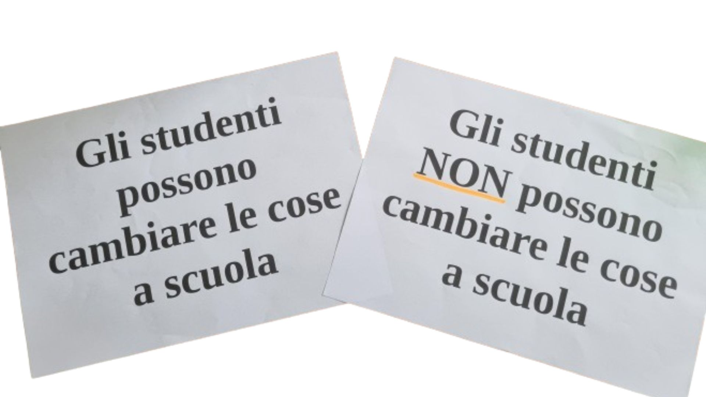

The IN-MOBILITÀ project was born with the goal of transforming underutilized urban spaces into vibrant and functional places, promoting sustainable mobility. The heart of the project lies in the union between the school community - composed of students and teachers - and the regeneration of urban spaces. Our approach is simple yet ambitious: to move immobile places toward a more sustainable and accessible future for all. IN-MOBILITY is a project that aims to make a difference, directly involving schools and the local community in a transformation process that looks to the future, sustainability, and collective well-being. A small step for greater mobility. This is an urban regeneration and sustainable mobility project, with Urbana Cooperativa Sociale as the lead organization.
The IN-MOBILITÀ project aims to regenerate unused urban spaces, making them lively and functional, with a particular focus on sustainable mobility. At the center of the initiative is the collaboration between schools and the local community to transform the territory in a participatory and future-oriented way. The goal is to promote concrete change toward a more accessible and sustainable urban environment.


Our first goal is to regenerate an area dedicated to sustainable mobility, creating spaces that encourage the use of eco-friendly transportation. We're talking about bike-sharing stations, parking areas for electric vehicles.

Within this project, another fundamental goal is the development of spaces related to school interests, such as a wooden classroom immersed in greenery.

Understanding student routes is essential for improving sustainable mobility through questionnaires and analysis of travel habits.

A journey that begins with discussion: we divided into groups to answer challenging questions. The topic? School. Can students really make a difference in their school reality? The debate was lively, stimulating, and made us reflect on our active role in the educational community.
Community: a concept that goes beyond simple coexistence. It's about sharing, relationships. We explored how a group of people comes together around a common goal, acting and interacting to build something greater.

Through surveys and comparisons with other students, we reflected on our travel habits. Watching a video about Nordic countries opened our eyes to the potential of sustainable mobility, giving us new ideas for thinking about our future.

School is not just a physical place but an ecosystem that grows and shapes itself based on the needs of those who live in it. In this meeting, we discussed how we would like our school space to be, from the routes to get there to the spaces that welcome us every day.

The idea takes shape! We measured, designed, and imagined what our mobility corner would look like. The educators introduced us to Camposaz, telling us about their ideas for a sustainable wooden structure.

We developed concrete proposals on how to design and communicate the mobility corner. Our goal? To create a space that fosters meeting, exchange, and collaboration among peers, with a focus on adding another space for lessons.
.jpg)
A field experience that allowed us to meet design and communication experts. In Vicenza, we gathered ideas and inspiration, giving concrete form to our project.
.jpg)
The journey culminates in a moment of great satisfaction: the presentation of our work. Municipal and provincial authorities attended the presentation of our project, and the mobility corner was finally inaugurated, symbolizing a year of growth and participation.

We took a step back to reflect on the impact of the previous year's activities. What have we learned? What can we improve? This meeting was an opportunity to collect challenges and stimuli for the new year.

We explored a crucial theme: ethical finance. A system that puts people and the environment at the center and guides decisions on where to allocate resources. We reflected on how ethics can guide financial decisions, also learning about some organizations that carry forward this approach.

What is a cultural action? We analyzed various examples, from the most formal to the most informal, and put what we learned into practice by planning our swap party: an opportunity to promote reuse, creativity, and sustainability.

The art of exchange! At our swap party, we experienced exchanging objects, from clothing to stationery to books. A fun and concrete way to raise awareness about sustainability and conscious consumption.

The bicycle is one of the symbols of sustainable mobility. We learned about its components, how to repair it, and ensure our safety. A practical meeting that taught us how to keep our means of transportation in perfect condition.

The journey has ended, and it's time to prepare for the final conference. We divided into two groups: one working on the speech to explain how the website was created and the path we followed during the two years of the project, and another to write a letter to the institutions.

- Urbana social cooperative
- Vicenza: IIS Canova
- Vicenza: ITIS Rossi
- Schio: Liceo Tron-Zanella
- Montecchio: IIS Silvio Ceccato
- Thiene: ITET Aulo Ceccato
PlaNet is a sustainable training platform, designed to be accessible, engaging, and stimulating. It focuses on crucial themes such as sustainable nutrition, circular economy, sustainable mobility, energy consumption, and diversity and inclusion (D&I). Using gamification as a learning technique, PlaNet makes skill acquisition an interactive and motivating experience, promoting greater awareness and responsibility toward a more sustainable and inclusive future.
Learn morePlaNet is a sustainable training platform, designed to be accessible, engaging, and stimulating. It focuses on crucial themes such as sustainable nutrition, circular economy, sustainable mobility, energy consumption, and diversity and inclusion (D&I). Using gamification as a learning technique, PlaNet makes skill acquisition an interactive and motivating experience, promoting greater awareness and responsibility toward a more sustainable and inclusive future.
Learn morePratham Madaan
Manuel Visentin
Giordano Peressini
Gioia Ferrando